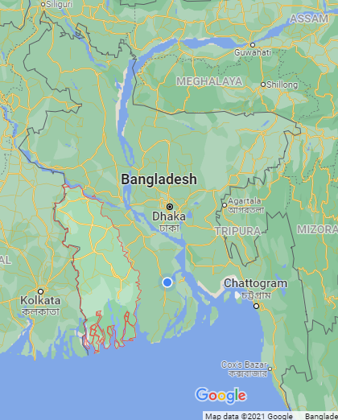

খুলনা/KHULNA
খুলনা হলো বাংলাদেশের দক্ষিণ পশ্চিমাঞ্চলে খুলনা বিভাগের দশটি জেলার বিভাগীয় সদর দপ্তর।
এটি খুলনা বিভাগের কেন্দ্রীয় শহর। ঢাকা ও চট্টগ্রাম নগরের পরে এটি বাংলাদেশের তৃতীয় বৃহত্তম নগর।

নামকরণের ইতিহাস
খুলনা সদরের নামে খুলনা বিভাগের নামকরণ করা হয়েছে। প্রচলিত মতানুসারে খুলনা শহর থেকে দেড় কিলোমিটার দূরে
ভৈরব নদীর তীরে খুল্লেনেশ্বরী দেবীর মন্দির ছিলো এবং এই দেবীর নামানুসারে খুলনা অঞ্চলের নামকরণ করা হয়েছে।
ইতিহাস ও ঐতিহ্য
১৯৪৭ এ দেশ ভাগের পর তৎকালীন পূর্ব পাকিস্তানে ঢাকা, চট্টগ্রাম এবং রাজশাহী বিভাগ গঠিত হয়। বর্তমান খুলনা
বিভাগ তখন রাজশাহী বিভাগের অন্তর্গত ছিলো এবং বরিশাল ছিলো ঢাকা বিভাগের অন্তর্গত। পরবর্তীতে ১৯৬০ সালে
তৎকালীন রাজশাহী বিভাগের কুষ্টিয়া, যশোর ও খুলনা এবং ঢাকা বিভাগের বরিশাল,ফরিদপুর নিয়ে খুলনা বিভাগের যাত্রা
শুরু হয়।